CRM ELIMAZ · M1 · TASK M1-49 · 18/11/2026
Đề xuất cho 12 màn nội bộ của CRM, vẽ theo hệ thiết kế đã duyệt (apps/storefront-giftstatus/DESIGN.md): chỉ màu, cỡ chữ, bốn cỡ bo góc có sẵn; không có gì chỉ hiện khi rê chuột; nút trên điện thoại cao ít nhất 44 px. Mỗi màn có nhiều trạng thái xếp dọc (khung viền đứt là ghi chú của mockup, không phải giao diện).
docs/mockups/m1/soat.mjs (chữ tràn, mục chạm, token màu, cỡ chữ, bo góc, ô chọn).Tìm, lọc trạng thái, danh mục, nhãn; ảnh, mã, tên, giá, có thể bán. 0 / 1 / 200 mẫu, tên 80 ký tự, chưa có ảnh, ảnh bị mất, tồn âm, ngừng bán.
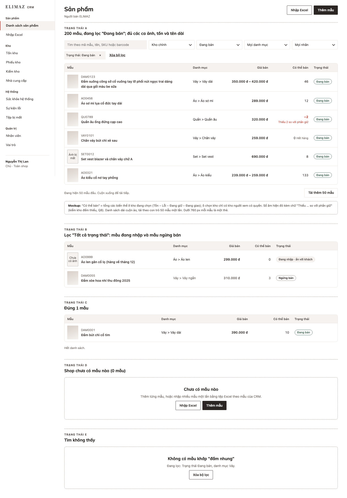
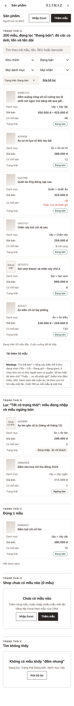
Thông tin, mô tả ngắn, trình soạn bài viết dạng khối (0 và 30 khối, xem trước), phân loại, bảng biến thể 2 màu × 3 size, ảnh: tải nhiều (đang xử lý, bị từ chối theo từng lý do), sắp xếp, gắn màu, xóa có hoàn tác, ảnh gốc, ảnh mất.
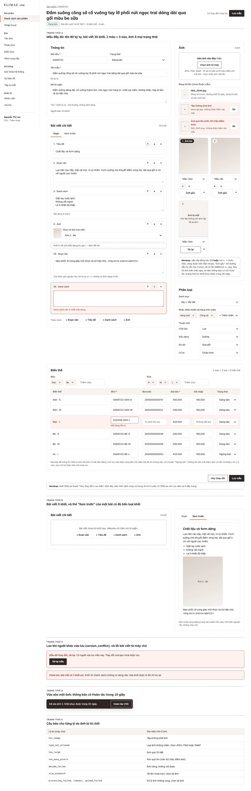
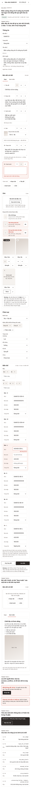
Bảng tồn bốn ngăn và có thể bán, lọc "Thiếu so với phần giữ".
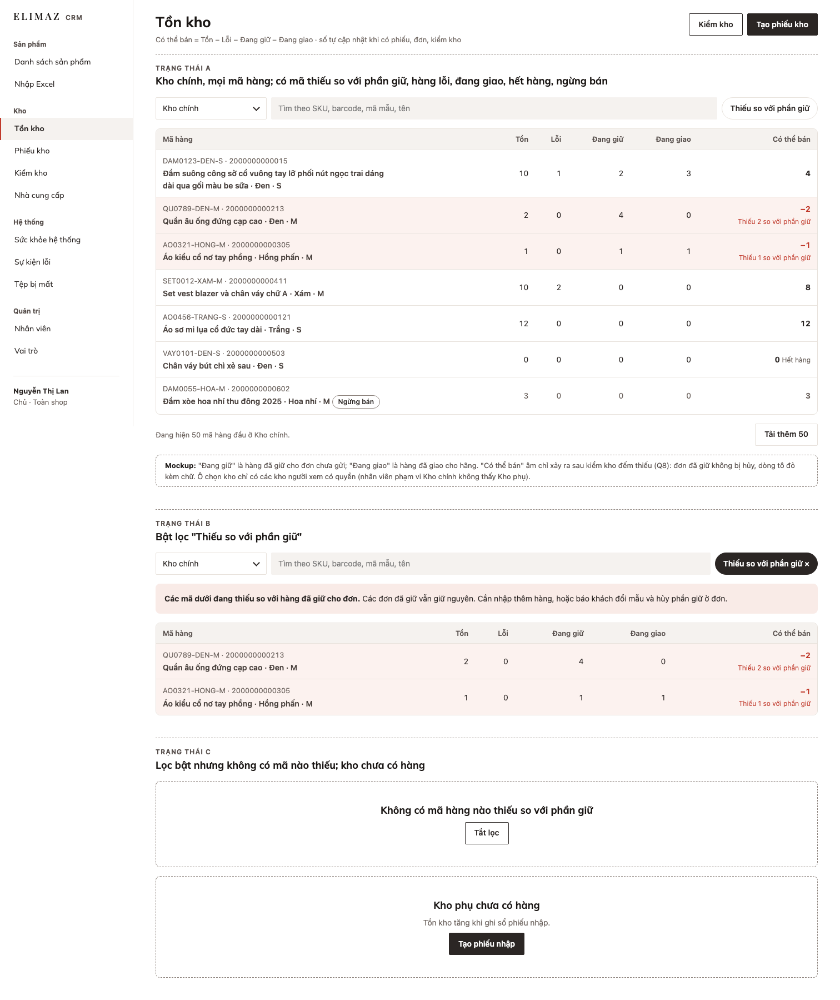
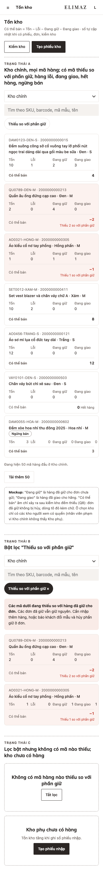
Danh sách phiếu; soạn phiếu nhập, thêm nhanh nhà cung cấp, thêm dòng bằng quét mã; ghi sổ có xác nhận; phiếu xuất không đủ hàng; phiếu đã ghi sổ.
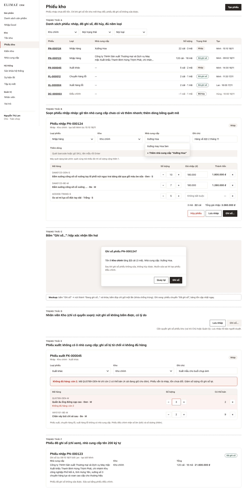
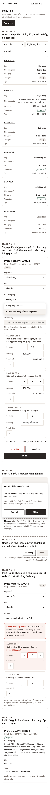
Danh bạ: danh sách, thêm, sửa, lưu trữ; tên 200 ký tự.
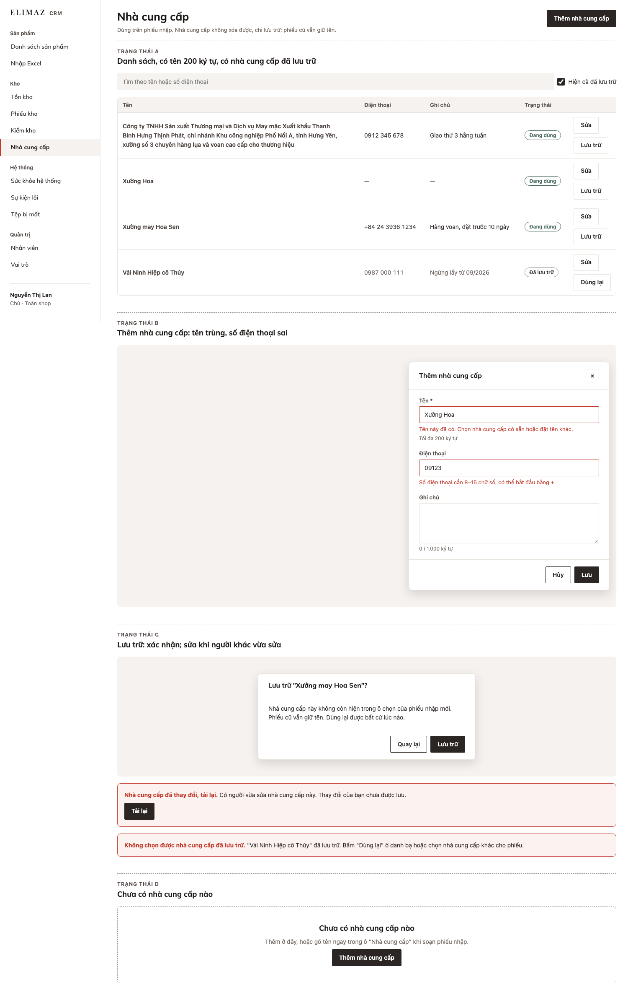
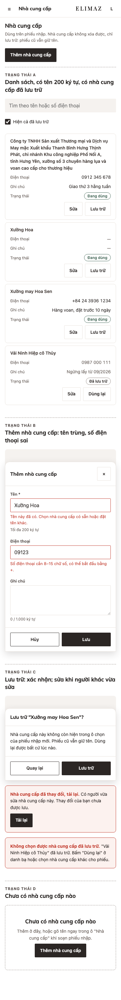
Quét barcode cộng dồn, sửa số, xem trước chênh lệch (đang giao không chỉnh, thiếu so với phần giữ), áp dụng.
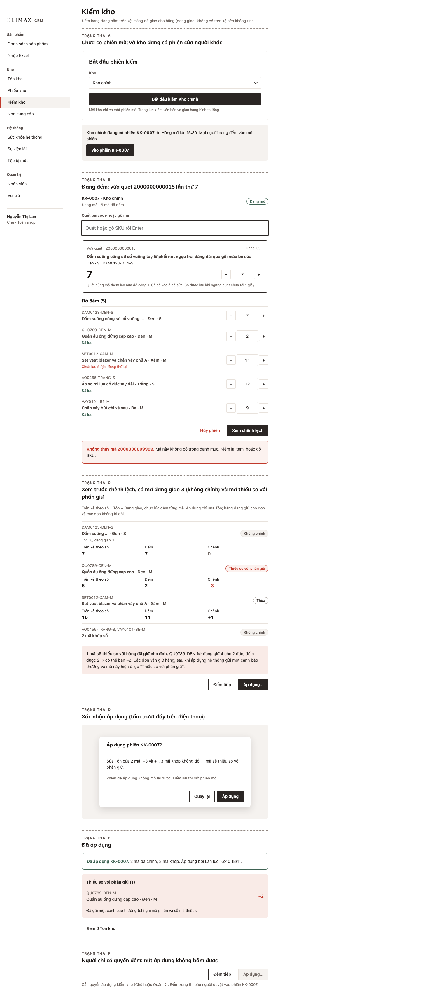
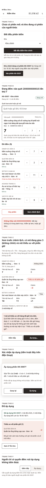
Tải mẫu, tải tệp, tiến trình, bảng lỗi 7 dòng, xem trước tạo/cập nhật, áp dụng, tệp trùng, thất bại.
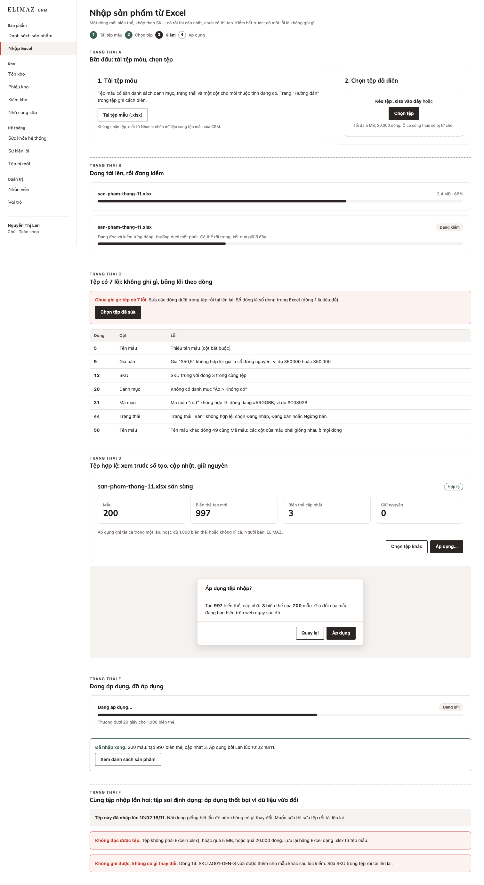
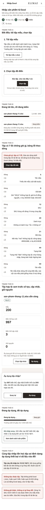
Dữ liệu GET /api/v1/platform/health: tiến trình (worker ngừng 3 phút), hàng đợi, sao lưu, lỗi, cảnh báo gấp và thường.
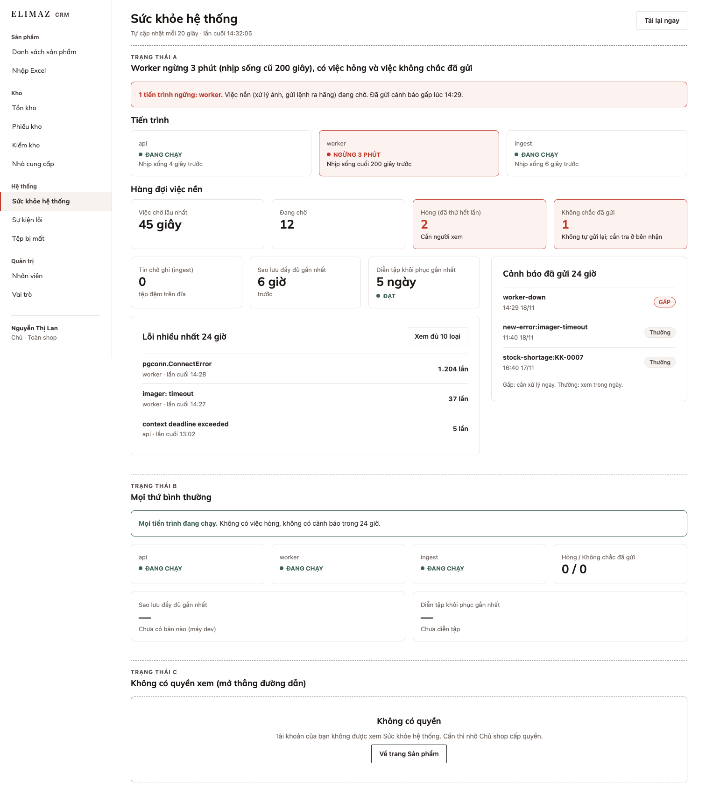
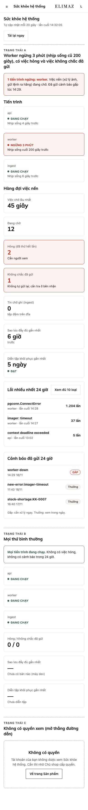
10 loại lỗi nhiều nhất: lần đầu, lần cuối, số lần, thông báo 300 ký tự.
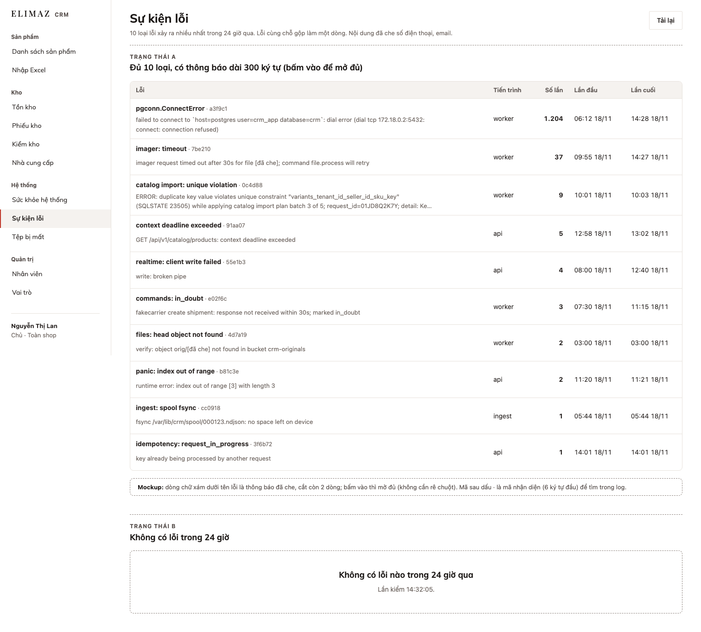
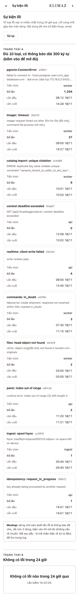
Danh sách tệp mất kèm mã mẫu, nút Kiểm lại.
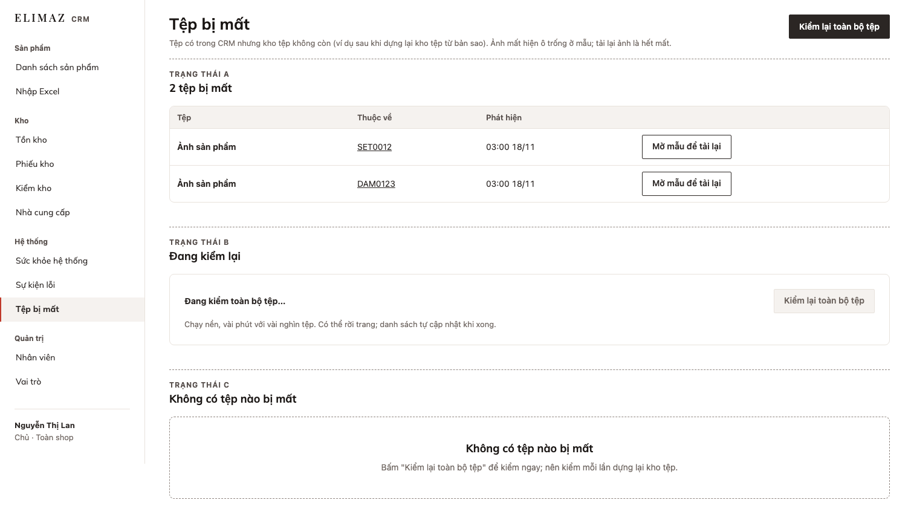
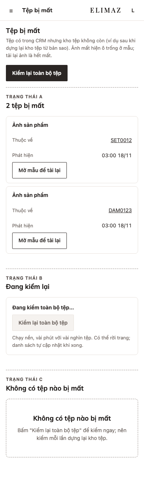
Danh sách, thêm, gán vai trò theo phạm vi, khóa; câu báo tự sửa, vượt quyền, Chủ cuối cùng.
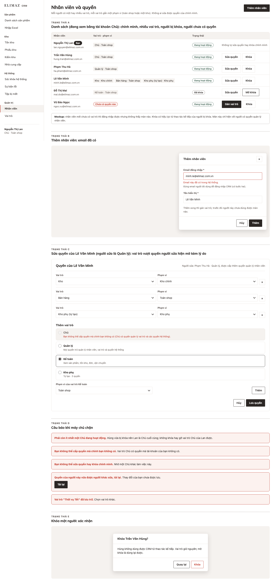
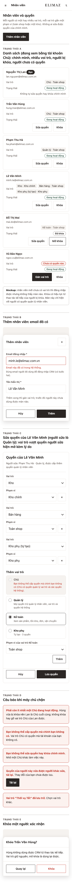
Vai trò mẫu và tự tạo, sửa bằng danh sách quyền nhóm theo khu vực, quyền người sửa không có hiện mờ kèm lý do, Chủ chỉ xem (40 quyền), lưu trữ bị chặn.
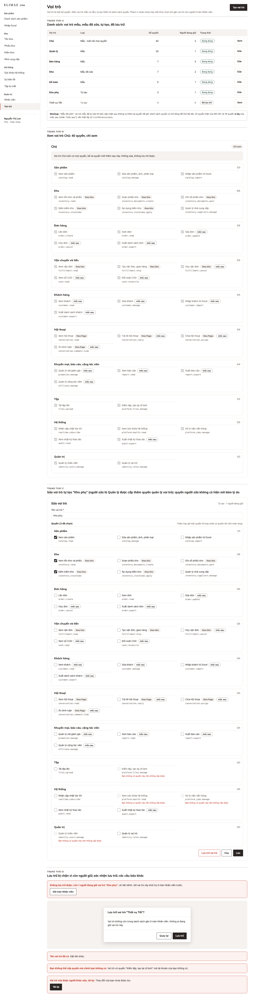
| # | Màn | Hành vi đề xuất | Chủ shop OK |
|---|---|---|---|
| H01 | Phiếu kho | Ghi sổ phiếu cần bấm xác nhận lần hai (hộp "Ghi sổ phiếu …?"); phiếu nháp chưa đổi tồn. Hiện tại: Phiếu nhập, xuất có trên Nhanh; cách duyệt cụ thể chưa khảo sát. | chưa |
| H02 | Phiếu kho | Soạn phiếu và ghi sổ là hai quyền: Kho soạn nháp, Chủ hoặc Quản lý ghi sổ (Q7). Người chỉ soạn thấy nút Ghi sổ mờ kèm lý do. Hiện tại: Chưa rõ trên Nhanh (câu hỏi Q08 còn mở). | chưa |
| H03 | Phiếu kho | Phiếu đã ghi sổ không sửa, không hủy được; sửa sai bằng phiếu điều chỉnh. Hiện tại: Chưa khảo sát. | chưa |
| H04 | Phiếu kho | Phiếu xuất (và chuyển hàng lỗi) không được lấy vào hàng đang giữ cho đơn: báo "Không đủ hàng: còn N", phiếu vẫn là nháp. Hiện tại: Nhanh dùng cùng công thức Có thể bán; chặn khi xuất chưa khảo sát. | chưa |
| H05 | Phiếu kho | Gõ tên nhà cung cấp chưa có ngay trong ô chọn của phiếu nhập → nút "+ Thêm nhà cung cấp …". Hiện tại: Nhà cung cấp trên Nhanh: chưa rõ có dùng. | chưa |
| H06 | Nhà cung cấp | Không xóa nhà cung cấp, chỉ lưu trữ; phiếu cũ giữ tên; dùng lại được. Hiện tại: Chưa rõ. | chưa |
| H07 | Kiểm kho | Kiểm kho trên điện thoại: quét cùng mã thì cộng 1, số tự lưu khi ngừng quét; sửa bằng nút − + hoặc gõ số. Hiện tại: Nhanh có kiểm kho (tháng 6–10); cách đếm trên điện thoại chưa khảo sát. | chưa |
| H08 | Kiểm kho | So số đếm với "Tồn − Đang giao" chụp lúc đếm từng mã: hàng đã giao cho hãng không bị tính là thiếu. Hiện tại: Chưa khảo sát cách Nhanh tính. | chưa |
| H09 | Kiểm kho | Đếm thiếu dưới phần đang giữ: không hủy, không đổi đơn đã giữ; Có thể bán âm, hiện đỏ "Thiếu N so với phần giữ", gửi một cảnh báo thường (Q8). Hiện tại: Chưa khảo sát. | chưa |
| H10 | Kiểm kho | Mỗi kho chỉ một phiên kiểm mở, nhiều người đếm chung; áp dụng cần quyền riêng (Chủ, Quản lý) và bấm xác nhận. Hiện tại: Chưa khảo sát. | chưa |
| H11 | Nhập Excel | Kiểm cả tệp trước; có một lỗi là không ghi gì; bảng lỗi theo dòng và cột. Hiện tại: Nhập Excel trên Nhanh: chưa rõ có dùng. | chưa |
| H12 | Nhập Excel | Chỉ nhận tệp mẫu của CRM, không nhận tệp xuất từ Nhanh (ADR-11). Hiện tại: — | chưa |
| H13 | Nhập Excel | Nhập lại đúng tệp đã nhập thì không đổi gì, báo "Tệp này đã nhập lúc …". Hiện tại: — | chưa |
| H14 | Nhập Excel | Áp dụng cần bấm xác nhận; giá đổi của mẫu đang bán hiện trên web ngay. Hiện tại: — | chưa |
| H15 | Sửa mẫu | Bài viết chi tiết soạn bằng khối (đoạn văn, tiêu đề, danh sách, ảnh của mẫu), đổi thứ tự bằng nút ↑ ↓; không dán HTML, không định dạng tự do (Q34). Hiện tại: Web đang đọc bài viết từ Nhanh. | chưa |
| H16 | Sửa mẫu | Xóa ảnh: ảnh biến mất ngay, thông báo có nút "Hoàn tác" 10 giây; khôi phục được trong 30 ngày. Hiện tại: Chưa khảo sát. | chưa |
| H17 | Sửa mẫu | Sắp xếp ảnh bằng kéo thả hoặc nút ← → luôn hiện; mỗi ảnh gắn một màu. Hiện tại: Chưa khảo sát. | chưa |
| H18 | Sửa mẫu | Ảnh chỉ nhận JPEG, PNG, WebP; tối đa 20 MB và 40 triệu điểm ảnh; không nhận HEIC (Q11, Q12). Ảnh bị từ chối báo lý do ở dòng "Đang tải lên". Hiện tại: Ảnh đang ở Nhanh. | chưa |
| H19 | Sửa mẫu | "Ảnh gốc" tải về bản gốc qua đường dẫn hết hạn sau 5 phút. Hiện tại: — | chưa |
| H20 | Sửa mẫu | Barcode để trống thì tự sinh EAN-13 bắt đầu bằng 2 khi lưu (Q5). Hiện tại: Nhanh tự sinh barcode theo cấu hình của shop. | chưa |
| H21 | Sửa mẫu | Hai người cùng sửa một mẫu: người lưu sau nhận "Mẫu đã thay đổi, tải lại", không ghi đè. Hiện tại: Chưa khảo sát. | chưa |
| H22 | Sửa mẫu | Biến thể đã lưu không xóa, chỉ "Ngừng bán" (không lên đơn mới, đơn cũ vẫn tra). Hiện tại: Chưa khảo sát. | chưa |
| H23 | Sản phẩm | Trạng thái "Đang nhập" ẩn mẫu với khách (Q6). Hiện tại: — | chưa |
| H24 | Nhân viên | Không ai tự sửa quyền hay khóa chính mình: dòng của chính mình không có nút. Hiện tại: Nhanh: chưa khảo sát. | chưa |
| H25 | Nhân viên | Chỉ gán được vai trò mà người gán có đủ quyền; vai trò vượt quyền hiện mờ kèm lý do. Hiện tại: Chưa khảo sát. | chưa |
| H26 | Nhân viên | Luôn còn ít nhất một Chủ đang hoạt động: chặn khóa hay gỡ Chủ cuối cùng. Hiện tại: Chưa khảo sát. | chưa |
| H27 | Nhân viên | Mỗi vai trò gán kèm phạm vi: toàn shop hoặc một kho. Hiện tại: Nhanh phân quyền xem theo kho, theo Page (cấu hình). | chưa |
| H28 | Vai trò | Vai trò Chủ chỉ xem, luôn đủ mọi quyền; vai trò còn người giữ không lưu trữ được; sửa vai trò mẫu thì bản cập nhật sau không thêm lại quyền đã gỡ. Hiện tại: Nhanh có 11 nhóm quyền có sẵn. | chưa |
| H29 | Hệ thống | Ba màn mới: Sức khỏe hệ thống (tự tải lại mỗi 20 giây), Sự kiện lỗi, Tệp bị mất. Hiện tại: Không có trên Nhanh. | chưa |
| H30 | Khung | Menu trái từ 1000 px; dưới 1000 px thanh trên 56 px và menu trượt từ trái. Mục không có quyền không hiện; mở thẳng đường dẫn thì "Không có quyền". Hiện tại: Khung CRM mới. | chưa |
| H31 | Nhân viên | Khóa nhân viên cần bấm xác nhận; người bị khóa không dùng được CRM từ thao tác kế tiếp, vai trò giữ nguyên, mở khóa là dùng lại được. Hiện tại: Chưa khảo sát. | chưa |
| H32 | Nhà cung cấp | Lưu trữ nhà cung cấp cần bấm xác nhận; nhà cung cấp đã lưu trữ có nút "Dùng lại". Hiện tại: Chưa rõ. | chưa |
| H33 | Vai trò | Lưu trữ vai trò cần bấm xác nhận; vai trò đã lưu trữ không còn trong danh sách gán ở màn Nhân viên. Hiện tại: Chưa khảo sát. | chưa |
| H34 | Kiểm kho | "Hủy phiên" kiểm đang mở: tồn không đổi, mở phiên mới được ngay. Hiện tại: Chưa khảo sát. | chưa |
| H35 | Sửa mẫu | Ảnh mới tải lên nằm ở mục "Đang tải lên" tới khi xử lý xong rồi tự vào cuối lưới ảnh; ảnh bị từ chối không vào mẫu, có nút "Bỏ". Hiện tại: Chưa khảo sát. | chưa |
Chưa duyệt. Điều phối viên ghi kết luận từng màn và từng dòng hành vi ở đây, kèm kết quả agent design-critic trên ảnh chụp.